Robots, glasses and jewelry compete for daily use; touch, controls and sustained wear matter beyond appearance.
[S01] [S34]AI PRODUCT DAILY / 2026-10-23
AI leaves the chat box for the small actions of daily life
A companion you can hold, an editable digital wardrobe, mobile voice drafting and tools connecting creation with action. Today’s products reveal where AI fits into everyday routines—and where people still make the handoff.
October 23, 2026 · Morning edition
Explore today’s signals →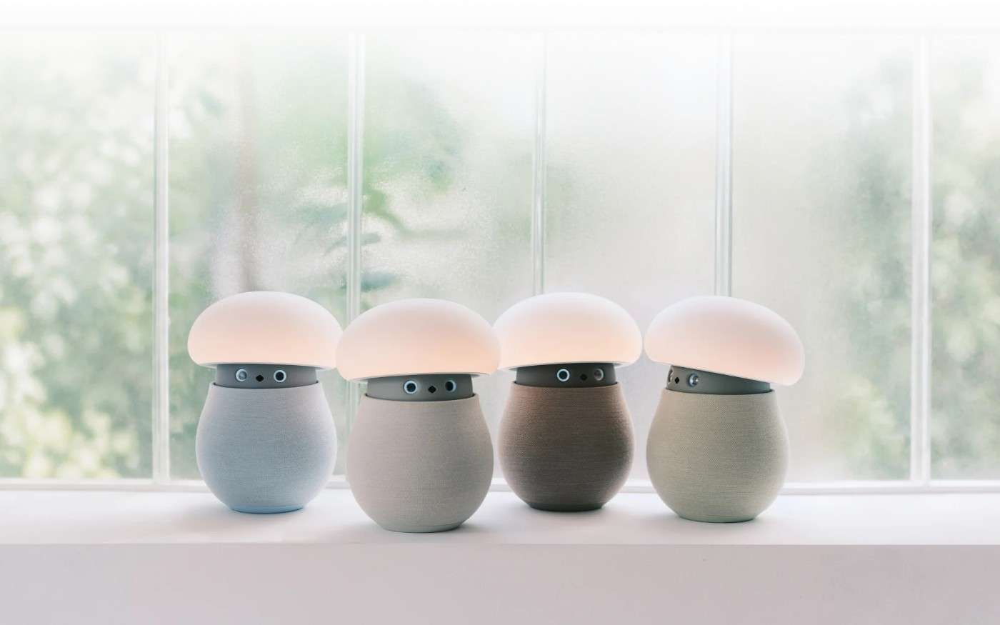
AI PRODUCT DAILY / 2026-10-23
Today’s signals and projects
From generated images to wardrobes, layers and projects: useful outputs need a path for continued editing.
[S11] [S07]Authorization, mobile handoffs and research interfaces help people see what an agent is changing before choosing the next step.
[S14] [S92] [S125]- 01Mori offers companionship through touch and ambient reactions, while preorder terms conflictOKA Mori · Preorder / companion robot
- 02Canva Craft plans the image, then connects it to editable designCanva Craft · Product update / visual creation
- 03MUSE puts the clothes you own onto a calendar and packing list, with previews kept in perspectiveMUSE: Wardrobe & Daily Outfits · Mobile app / wardrobe planning
- 041Password turns agent sign-in into an account request you can approve1Password for Agents · Product update / agent authorization
- 05OpenWhispr adapts dictation by app and preserves speech when edits failOpenWhispr 1.10.4 · OSS update / cross-app dictation
- 06A1 moves filming controls to the wrist, while automatic following still needs a clear takeover pathAntigravity A1 Follow Me Bundle · Product bundle / follow-me drone
- 07Docs Live brings its spoken plan-to-draft workflow to WorkspaceGoogle Docs Live · Workspace rollout · Feature rollout / voice documents
- 08Nirva moves its order plan to November, while automatic journaling must separate records from interpretationsNirva AI Jewelry · Preorder update / AI jewelry
- 09X12 shows clearer mopping value, while maps and carpets still need human workECOVACS DEEBOT X12 OmniCyclone · Product review / cleaning robot
- 10Huawei glasses add nod-to-pay and a dedicated parking workflow华为 AI 眼镜 HarmonyOS 6.0.0.159 SP5 · Product update / AI glasses
- 11G2 keeps prompts in view, but ring control does not remove the input burdenEven Realities G2 / R1 · Product review / display glasses
- 12Eiliko removes memory and custom avatars, without establishing that access is closedEiliko · Investigation follow-up / companion toy
- 13Stardrift turns a Tokyo week into a map, but the first draft misses nights and Sunday tradeoffsStardrift · Hands-on review / trip planning
- 14Arc sets a moving deadline, and Dia cannot carry over every part of the workspaceArc / Arc Search → Dia · Sunset and migration / AI browser
- 15By Your Side works in the page you already use, with an explicit way to take overBy Your Side · Developer preview / browser assistant
- 16MacTidy sorts inherited files by origin and lets uncertain items go into reversible storageMacTidy 0.3 · App update / file organization
- 17Mini Apps keep evolving AI work in a live page, from route planning to 3D editsMiniMax Code Mini App · Feature introduction / coding extensions
- 18Turn a child’s question into something to move, play and revise together懂了鸭 AhaDuck · Limited preview / family creation
- 19Motion blur follows preview capability into export, while recordings become readableHyperFrames 0.8.186 · OSS update / video creation
- 20Ovis reconnects phone chat to the terminal and shows what happened after sendingOvis 0.4.13 · OSS update / mobile agent handoff
- 21Decisions moves small choices out of long answers to keep voice interactions movingOpenAI Decisions API · Product update / API
- 22Google identity and billing reach native Claude through a new organizationClaude Models on Google Cloud (Anthropic managed) · Developer API platform / official general availability and protocol documentation
- 23Adobe brings individual journey traces into chat, with branch evidence and read-only limitsAdobe Journey Optimizer — Trace Journey Profile · Product update / journey diagnosis
- 24Minerva links slow jobs to hardware symptoms, with version limits behind the conversational interfaceNVIDIA Minerva · Product launch / operations software
- 25Google puts waiting agent computers to sleep; ACE preview is still months awayGoogle Agent Compute Engine / Agent Substrate · Infrastructure preview / agent execution
- 26A household memory assistant ties answers to selected conversationsYour Home Remembers · Research signal | original paper and interactive prototype
- 27ABRA gives reusable canvas actions a published task-specific meaningABRA Agent-Bound UI · Research signal | original paper and interactive prototype
- 28Atlas shows the paths an agent set aside alongside the outputs it producedAtlas · Research signal | original paper and interactive prototype
- 29CoWriter keeps authors involved through shorter, purposeful exchangesCoWriter · Research signal | original paper and interactive prototype
- 30Planning controls improved briefs while making the AI feel more demandingDynamic Metacognitive Scaffolds · Research signal | original paper and interactive prototype
- 31Counterspeech co-writing preserves a user's input but can flatten their voiceIn-Browser Counterspeech Co-Writing · Research signal | original paper and interactive prototype
- 32T-DIG lets creators name what should vary across an image setT-DIG · Research signal | original paper and interactive prototype
AI PRODUCT DAILY / 2026-10-23Preorder / companion robot · 2026-10-22T13:01:00Z · Window observation
Mori offers companionship through touch and ambient reactions, while preorder terms conflict
Mori targets people wanting quiet company at home through a moving lamp rather than a sustained conversation.
A touch starts ambient experiences combining light, sound and movement, replacing a phone-based search for relaxing media.
The October 22 announcement opens a limited $649 Founder Edition; the shop lists estimated delivery in late December. It remains a preorder rather than delivered availability, and the app’s Nature Time subscription plans and renewal terms vary by region.
Retracting the head conceals the camera, and OKA claims local perception processing; neither constitutes an independent privacy audit.
Product perspective
Official pages disagree on regular price and included subscription duration, making the actual order terms material.
AI PRODUCT DAILY / 2026-10-23Product update / visual creation · 2026-10-22 · Window observation
Canva Craft plans the image, then connects it to editable design

For Canva users making posters, social graphics and personal projects, Dream Lab now includes the company’s own Craft image model.
Craft plans elements, placement and text before rendering. Magic Layers then offers a route to selecting and editing individual elements. Objects can be moved, resized or replaced without regenerating the whole picture.
Released October 22 with up to 2K output and over thirty ratios; the API is available, while MCP and faster variants remain forthcoming. Image text supports fifty-five languages.
Layer conversion supports single-page PNG and JPG and can struggle with photographs. The internal composition plan is not a demonstrated editable outline. Layer conversion excludes images exceeding five thousand pixels on their longest edge.
Product perspective
The value is preserving what works while changing a date, headline or object. Global access does not establish unlimited free generation.
AI PRODUCT DAILY / 2026-10-23Mobile app / wardrobe planning · 2026-10-21T22:29:41Z · 3-day / see date limits
MUSE puts the clothes you own onto a calendar and packing list, with previews kept in perspective
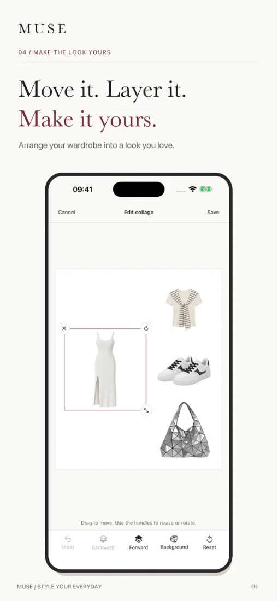
People repeatedly planning daily outfits and trip packing can organize existing clothes into a reusable wardrobe instead of starting each decision again.
Review garments identified from photos, edit combinations on a canvas, then assign looks to dates or travel days and collect a packing list.
Version 1.0.1 on October 21 improves image loading, calendar previews, dictation and city search across wardrobe entry and destination planning.
Suggestions stay editable; previews do not guarantee fit. Cutouts cost five credits, try-ons twenty, outfits two; membership credits reset monthly.
Product perspective
The value is connecting clothes to plans, with checking still required. Photos use cloud processing; stopping requests and deleting an account do not cancel subscriptions.
AI PRODUCT DAILY / 2026-10-23Product update / agent authorization · 2026-10-22 · Window observation
1Password turns agent sign-in into an account request you can approve
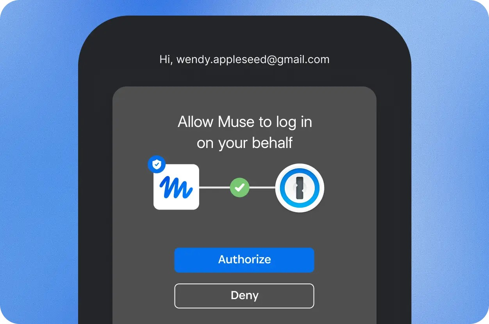
For people using personal agents for travel, parties or study plans, 1Password adds a way to continue when a task reaches a login.
The agent requests an account; the person approves on their device; 1Password fills the password or one-time code into the site. With multiple saved accounts, people choose one; the agent never receives the credential itself.
The October 22 platform announcement starts staged Muse and Grok Bot rollouts, while other named integrations remain forthcoming.
People choose the login and can disconnect the integration. Account access after sign-in still depends on the agent and website.
Product perspective
The benefit is fewer copied secrets and browser takeovers. Current eligibility is limited to Individual and Families accounts on 1Password.com. Eligible subscriptions incur no additional integration charge.
AI PRODUCT DAILY / 2026-10-23OSS update / cross-app dictation · 2026-10-22T08:21:23Z · Window observation
OpenWhispr adapts dictation by app and preserves speech when edits fail
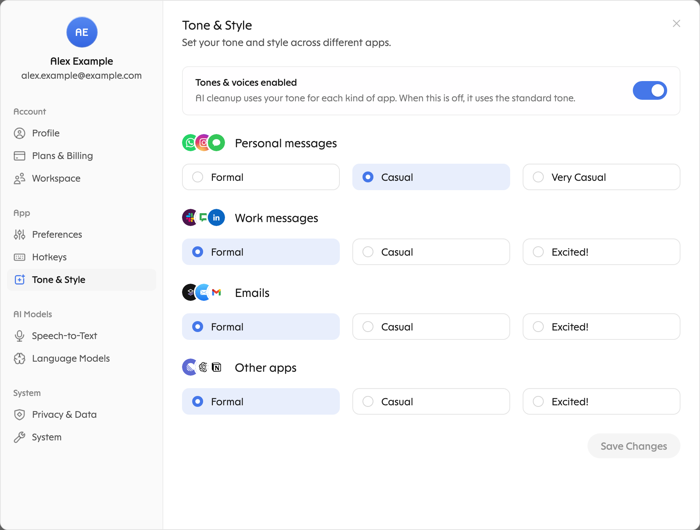
For people dictating messages, email and meeting notes across desktop applications, a global shortcut turns speech into text at the cursor.
The app identifies the destination category, then cleanup applies saved tones separately for personal messages, work, email and other applications.
The release adds tone preferences, calendar links and detailed summaries, retains transcripts after later editing failures, and waits for final meeting audio.
Tone starts disabled; recognition and cleanup have separate model choices. Local recognition alone does not make the full workflow offline.
Product perspective
The practical gain is less rewriting and recoverable speech. Local dictation is unlimited and free; free cloud dictation includes 2,000 words weekly, with Pro billed annually.
AI PRODUCT DAILY / 2026-10-23Product bundle / follow-me drone · 2026-10-20 · 3-day / see date limits
A1 moves filming controls to the wrist, while automatic following still needs a clear takeover path
Follow Me targets people filming themselves outdoors, giving A1 a shooting mode that does not require wearing goggles.
Use the watch for tracking and status, the ring for relative positioning, then reframe the 360-degree footage after landing.
The October 20 kit costs $799 with the aircraft; existing A1 owners can purchase accessories separately.
Reviews differ on tracking reliability and describe thin-obstacle and low-battery landing difficulties. The separately announced dual-stick controller still requires goggles and is not a mandatory Follow Me component; the different packages should remain distinct.
Product perspective
It reduces in-flight framing effort while moving work into editing; the aircraft still requires attention.
AI PRODUCT DAILY / 2026-10-23Feature rollout / voice documents · 2026-10-21 · 3-day / see date limits
Docs Live brings its spoken plan-to-draft workflow to Workspace
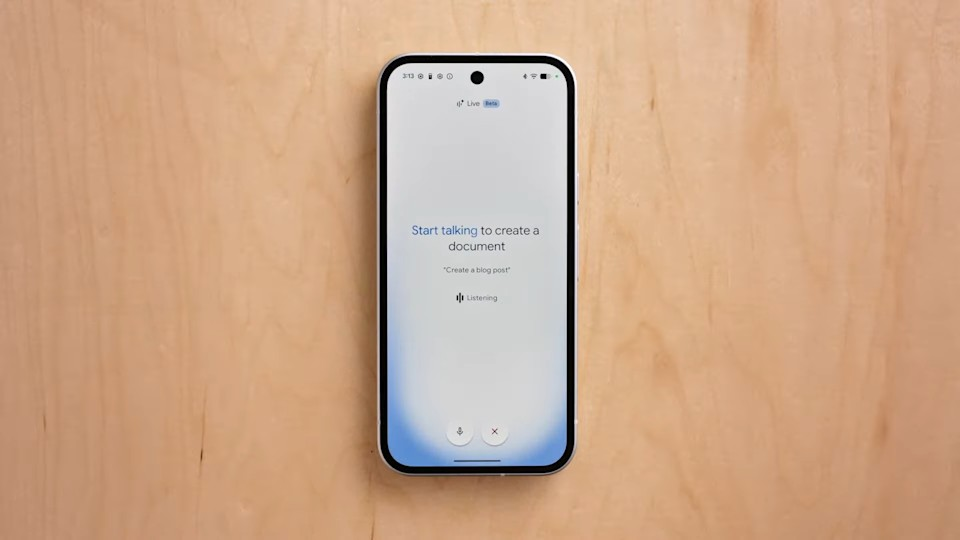
Eligible Workspace users gain the mobile workflow; consumer Pro and Ultra access began earlier, so this is an expansion.
Choose voice creation in Docs, describe the goal, adjust the initial plan, then generate and refine the draft conversationally. Topics can be removed or sections added before the plan expands into prose.
The October 21 note confirms Workspace availability on Android and iOS, included as a three-day supplement.
Source settings cover Drive, email, chat and the web. Earlier sources persist within a conversation, making project context important. Added Drive files require viewing permission.
Product perspective
Editing the structure first can reduce later rewriting. The documented workflow remains mobile-only and English-only.
AI PRODUCT DAILY / 2026-10-23Preorder update / AI jewelry · 2026-10-22 · Window observation
Nirva moves its order plan to November, while automatic journaling must separate records from interpretations
Nirva targets people wanting to reflect on daily moods and relationships without manually writing a journal each day.
Wear the jewelry, then revisit a journal and relationship patterns in the phone app; interpretations depend on captured context.
The October 22 report gives a $249 price expectation, November ordering and first deliveries targeted before year end. January’s announcement had targeted preorders the following month and first-half shipping, so that earlier expectation cannot be carried forward.
The official site remains an email signup; wearer recognition and optional data connections are described claims, without independent testing.
Product perspective
The timetable differs from January’s first-half delivery plan; financing does not establish delivery or sustained usefulness.
AI PRODUCT DAILY / 2026-10-23Product review / cleaning robot · 2026-10-22 · 3-day / see date limits
X12 shows clearer mopping value, while maps and carpets still need human work
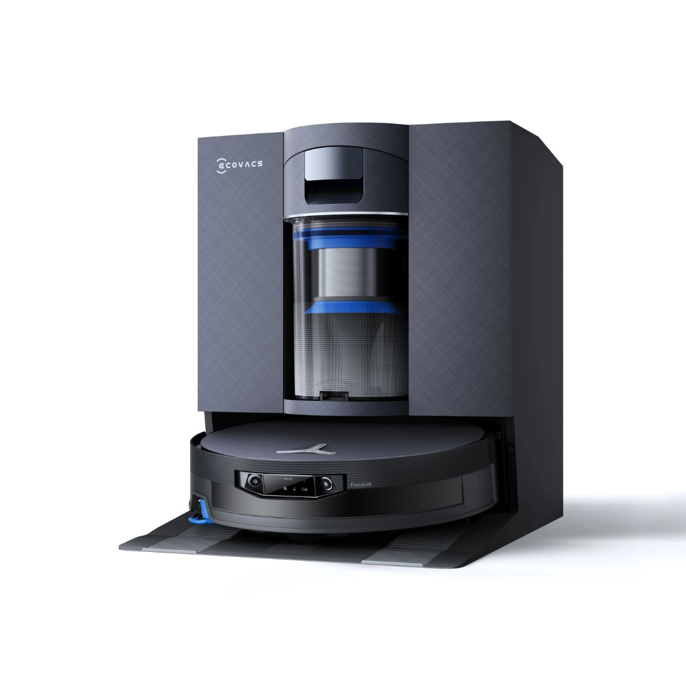
The new evidence concerns an X12 review in a home with a dog and cat, especially relevant to hard-floor cleaning.
The app maps rooms and the robot cleans before returning to its dock, but room boundaries can still need manual correction.
The review praises mopping but reports carpet residue and cable trouble, qualifying the usefulness of headline suction specifications.
FocusJet targets a specified area, while autonomous planning and physically completing a clean remain distinct capabilities.
Product perspective
Suitability depends on floor mix and maintenance burden; an observed bundle promotion is not the standalone list price. Dock automation reduces repeated handling, while filters, brushes, mop parts and cleaning solutions remain part of ownership and maintenance.
AI PRODUCT DAILY / 2026-10-23Product update / AI glasses · 2026-10-22 · 3-day / see date limits
Huawei glasses add nod-to-pay and a dedicated parking workflow

Existing Huawei AI glasses wearers gain a more practical way to pay while shopping or leaving a car park.
Set up Alipay and the vehicle plate in the glasses app, look at a payment code, then respond to the spoken prompt.
The firmware adds head-gesture confirmation and parking payment, while extending video capture to five minutes on the existing hardware.
A nod confirms and a shake cancels. Compatible software and companion authentication remain necessary; reconnecting or passing four hours requires locking and unlocking the phone again.
Product perspective
When carrying shopping bags, head gestures can save reaching for a phone. The spoken prompt still gives the wearer a decision before payment.
AI PRODUCT DAILY / 2026-10-23Product review / display glasses · 2026-10-19 · 7-day review
G2 keeps prompts in view, but ring control does not remove the input burden
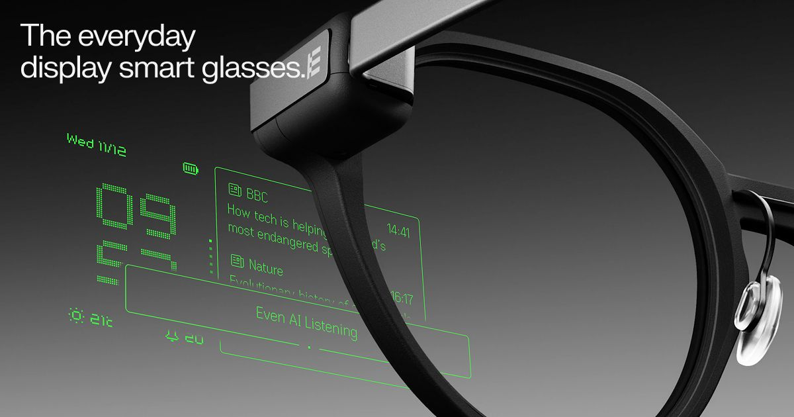
G2 serves people wanting text in view without camera glasses; the optional R1 moves input to a finger.
Instead of reaching to a temple, wearers can tap, scroll and hold the ring, while still learning distinct gestures.
Engadget’s new October 19 review reports ring gesture confusion; another reviewer finds the position more natural but notes sluggish input.
Separating finger input from the display makes visible interface feedback central to understanding whether a gesture registered.
Product perspective
Glasses start at $599 and the ring costs $249; adding an accessory does not necessarily reduce interaction effort. These are new independent observations rather than a new glasses generation; prescription lenses and regional order conditions remain separate purchase considerations.
AI PRODUCT DAILY / 2026-10-23Investigation follow-up / companion toy · 2026-10-22T11:00:00Z · Window observation
Eiliko removes memory and custom avatars, without establishing that access is closed
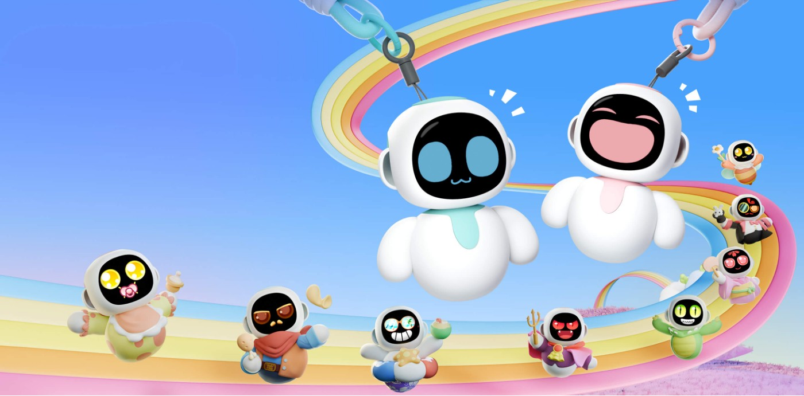
Eiliko is a clip-on companion toy that combines touch reactions and expressive faces with online AI conversation.
After app-based network setup, owners speak to the toy; the conversational experience depends on an online service. More than ten preset voice commands remain an offline option, and app controls adjust volume and brightness; these paths are distinct.
An October 22 follow-up carries the vendor’s announcement that long-term memory and custom avatars were taken offline.
The reporter still describes exposed media and device access; this publication accessed no customer data or devices.
Product perspective
Removing a feature, deleting stored material and completing remediation are distinct outcomes; a promise does not establish completion.
AI PRODUCT DAILY / 2026-10-23Hands-on review / trip planning · 2026-10-21 · 3-day / see date limits
Stardrift turns a Tokyo week into a map, but the first draft misses nights and Sunday tradeoffs
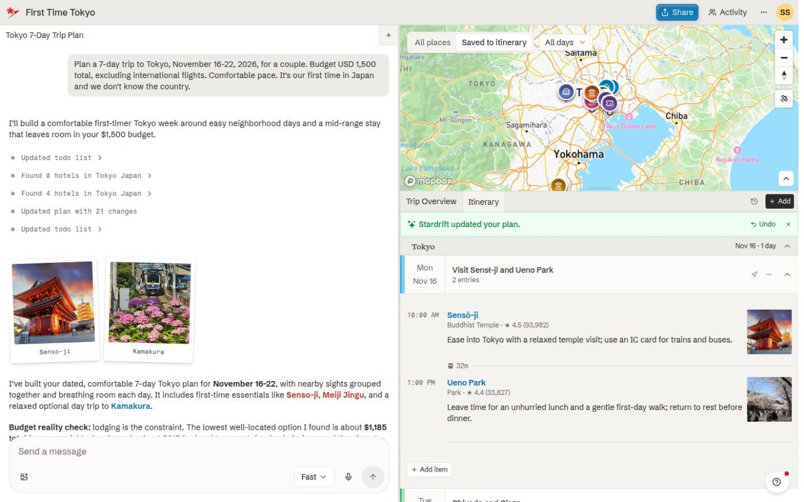
Travelers organizing saved places, hotels and daily routes can start Stardrift with a conversation and keep editing the resulting itinerary.
An October 21 competitor-authored review reports a dated seven-day Tokyo map itinerary in about 90 seconds, with two stops per day.
The output warned about a tight budget, but quoted seven hotel nights for six and scheduled Sunday Tsukiji, when many shops close.
Official features include collaboration, Gmail booking imports and weather suggestions. Companions can add activities; chat can change hotels or dates.
Product perspective
It provides an editable trip structure with manageable pacing. Hotel nights, individual shop hours and departure-day planning still determine whether that structure works.
AI PRODUCT DAILY / 2026-10-23Sunset and migration / AI browser · 2026-10-22 · 3-day / see date limits
Arc sets a moving deadline, and Dia cannot carry over every part of the workspace
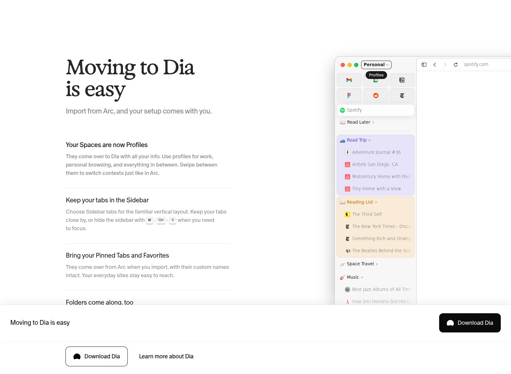
People keeping work, travel research and reading in Arc Spaces now face a moving deadline for pinned tabs, folders and logins.
New accounts stopped October 22; mobile AI and sync end November 23, desktop access December 22. A lightweight iOS browser remains.
Dia imports Spaces, tabs and logins, but nested folders flatten. Custom pinned-tab names survive the import. Easels require image exports; Boosts cannot be exported.
Other destinations get a Markdown link list to rebuild manually. Dia also excludes saved payment methods and autofill data.
Product perspective
Basic Dia remains free, with optional AI. The moving cost is rebuilding organization, especially for users relying on nested folders and editable boards.
AI PRODUCT DAILY / 2026-10-23Developer preview / browser assistant · 2026-10-22 · 3-day / see date limits
By Your Side works in the page you already use, with an explicit way to take over
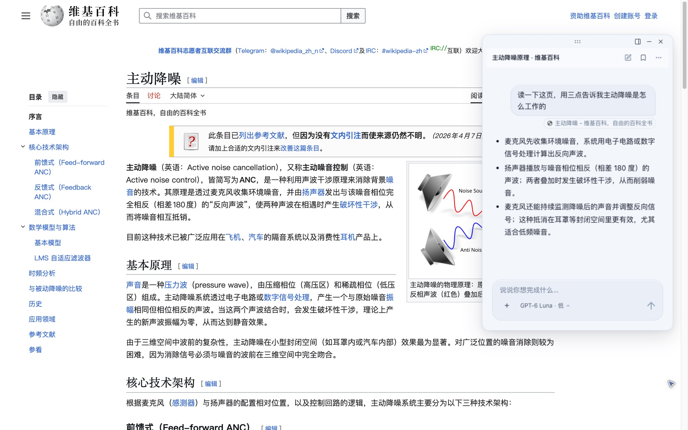
People reading foreign-language pages, comparing information or filling forms can work beside an assistant in their existing Chrome session.
Ask about selected text, translate a page or delegate navigation and filling; results stay in the side panel or a floating card. Translation does not cover text inside images or PDF files.
The developer publicly introduced the preview with source and Chinese documentation. Setup requires a local build and your own model credentials.
Take over, edit and hand the page back. Routine clicks are not individually approved, and current documents disagree about sending controls.
Product perspective
Its distinctive appeal is continuous collaboration in the current page, with clear early-preview limits for demanding browser users.
AI PRODUCT DAILY / 2026-10-23App update / file organization · 2026-10-20T15:05:00 · 7-day review
MacTidy sorts inherited files by origin and lets uncertain items go into reversible storage
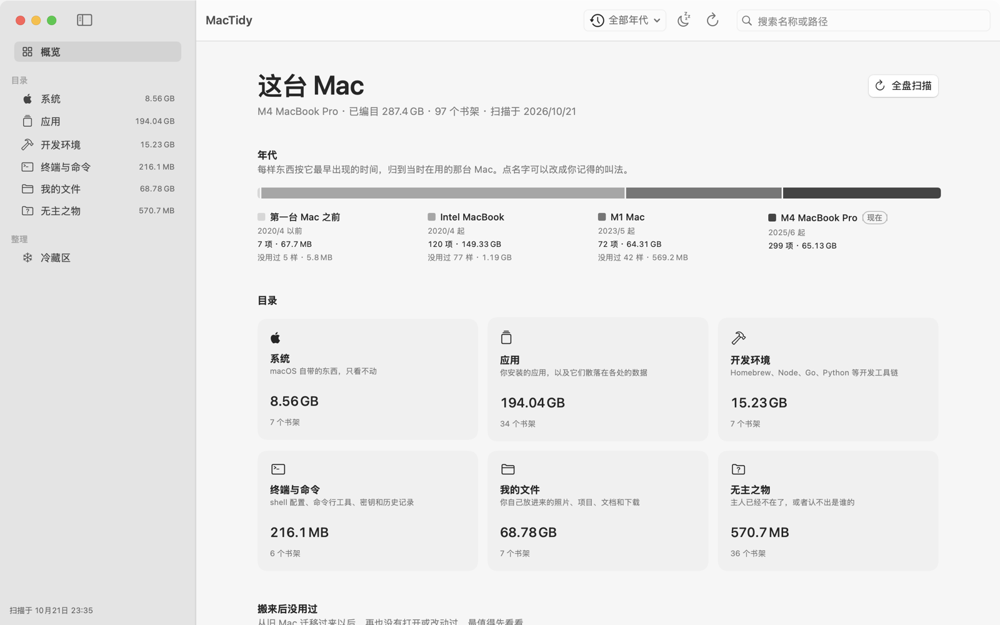
Mac owners who repeatedly migrate to new machines can discover which forgotten apps, toolchains and leftovers came along. It currently requires Apple silicon and macOS 14 or later.
Scan first, group items by owner and inferred era, filter unused arrivals, then choose to keep, freeze or move them to Trash.
Version 0.3 is the first public release. Optional AI identifies unfamiliar items while the local catalogue works without it.
Cold storage records original paths for restoration. AI receives filtered metadata; the app is not yet Apple notarized.
Product perspective
Its appeal is recovering the context behind disk clutter. Age and apparent inactivity remain clues, not proof that a file has no value.
AI PRODUCT DAILY / 2026-10-23Feature introduction / coding extensions · 2026-10-22 · 3-day / see date limits
Mini Apps keep evolving AI work in a live page, from route planning to 3D edits
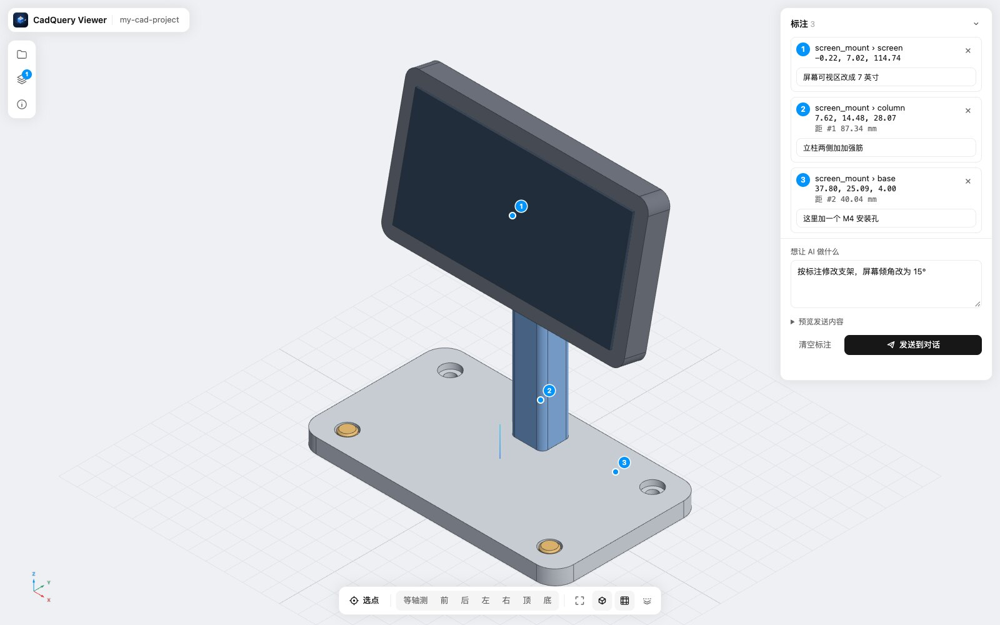
People refining a road trip, a 3D object or a personal dashboard can keep the work in a persistent MiniMax Code page.
Install an app or describe one to the Agent, then interact with its page and hand concrete changes back to the assistant.
The October 22 introduction packages the runtime, creation flow and community examples; earlier release notes already mention Mini Apps.
Page content goes through the message input for editing before sending. Apps run in local macOS or Windows desktop sessions, and individual plugins can need additional services.
Product perspective
The benefit is a workspace that remains actionable. Setup, dependencies and usage costs still differ between individual apps.
AI PRODUCT DAILY / 2026-10-23Limited preview / family creation · 2026-10-19T11:12:00+08:00 · 7-day review
Turn a child’s question into something to move, play and revise together
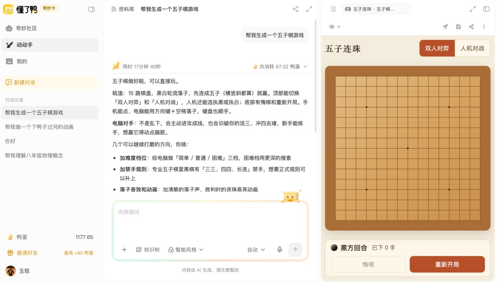
Parents and teachers can start with a community creation and adapt it around a child’s question.
Choose a card or express an idea through text, voice or recorded material, generate an interactive piece, play with it, revise it and decide whether to download or share with friends.
An October 19 report demonstrates Gomoku generation. This is a seven-day supplement; later coverage does not establish a second launch.
Remixing gives families a starting point, with separate publication and sharing steps. Access remains limited and pricing is unverified.
Product perspective
The appeal is letting children help decide how an activity works. An animated demonstration does not by itself establish factual accuracy.
AI PRODUCT DAILY / 2026-10-23OSS update / video creation · 2026-10-22T17:28:33Z · Window observation
Motion blur follows preview capability into export, while recordings become readable
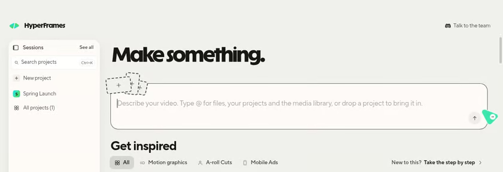
For creators making shorts and motion graphics with agents, HyperFrames combines natural-language changes and manual timeline editing within one project.
Create a canvas matching the source video's displayed shape, read timed voice, effects and music descriptions, then preview and render.
The release connects capture motion blur to preview and export. If the preview cannot support it, rendering disables it too and reports why.
Blur is opt-in, resolution can be overridden, and edits can be undone. Audio analysis reports missing information when transcripts or stems are unavailable.
Product perspective
Framing and preview consistency improve, with possible blur artifacts and extra rendering time. Local audio analysis stays local; best quality uploads the recording.
AI PRODUCT DAILY / 2026-10-23OSS update / mobile agent handoff · 2026-10-22T11:59:39Z · Window observation
Ovis reconnects phone chat to the terminal and shows what happened after sending
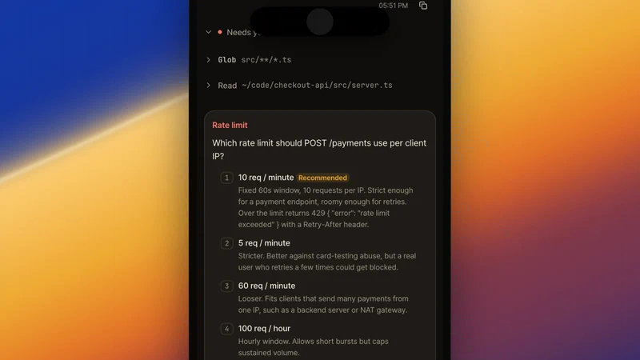
For individuals already running agents on a PC, Ovis exposes the same native session through a browser or phone while the host runs the work.
Read chat and answer question cards; commands needing native controls open a terminal overlay, preserving your reading position when you return.
Version 0.4.13 distinguishes accepted, waiting, completed and unobserved commands, resumes earlier sessions, and fixes confusion between panes sharing one folder.
Rewind opens the native terminal without executing it. Stale questions are rechecked, and initial messages remain pending if their originating page disconnects.
Product perspective
It best fits existing herdr users. Phones need a route to the host; model bills remain separate, and restarting the server loses in-memory pending messages.
AI PRODUCT DAILY / 2026-10-23Product update / API · 2026-10-22 · 3-day / see date limits
Decisions moves small choices out of long answers to keep voice interactions moving
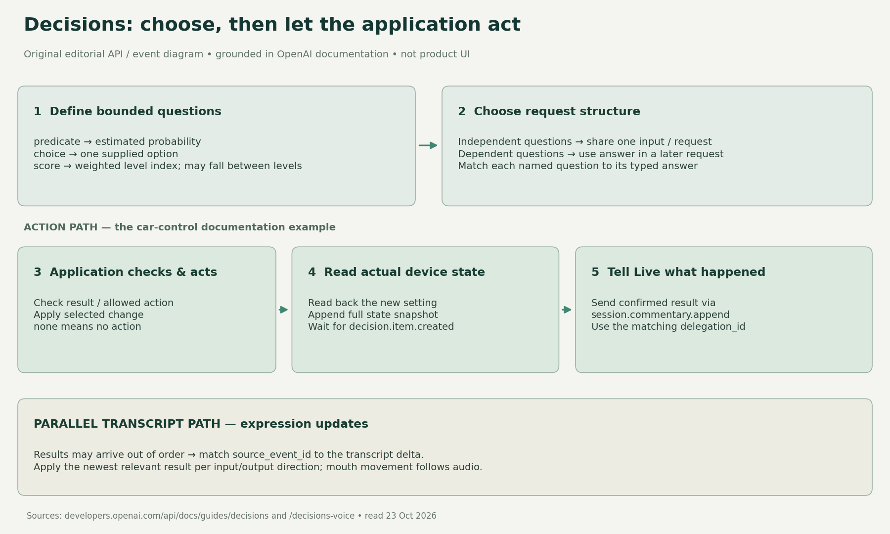
Decisions handles frequent small judgments for voice assistants, support routing and animated characters, with answers constrained to probabilities, supplied choices or scores.
Developers define the alternatives; the application acts on the result, reads back state and returns confirmation to the conversation.
The update beyond October 7’s beta adds general availability, native GPT-Live integration and caching for up to 400 independent questions per input.
Dependent questions still need separate requests. Selecting an action does not prove execution, and delayed expression results need event matching.
Product perspective
The useful gain is smoother conversation, assessed alongside mistaken triggers and recovery rather than classification latency alone.
AI PRODUCT DAILY / 2026-10-23Developer API platform / official general availability and protocol documentation · 2026-10-22 · 3-day / see date limits
Google identity and billing reach native Claude through a new organization
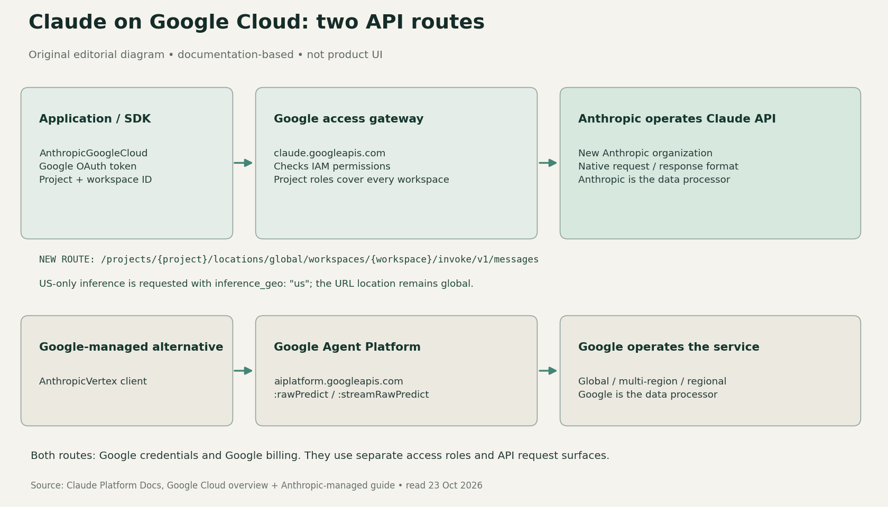
For teams building agents on Google Cloud, this developer-platform route provides access to new Claude capabilities through their existing cloud identity and billing.
Create a new organization through Marketplace and project permissions, then use native Claude requests. Existing files, configuration and retention arrangements do not transfer automatically.
The October 22 general release is operated by Anthropic, distinct from Google's managed route. Same-day feature access remains subject to documented exclusions.
Project roles span workspaces. US-only inference requires a request setting, and revoking a creator's access does not stop existing agent work.
Product perspective
Fast mode claims up to 2.5x output-token throughput, not total-task acceleration, at $8/$40 per million input/output tokens before applicable modifiers.
AI PRODUCT DAILY / 2026-10-23Product update / journey diagnosis · 2026-10-22 · 3-day / see date limits
Adobe brings individual journey traces into chat, with branch evidence and read-only limits
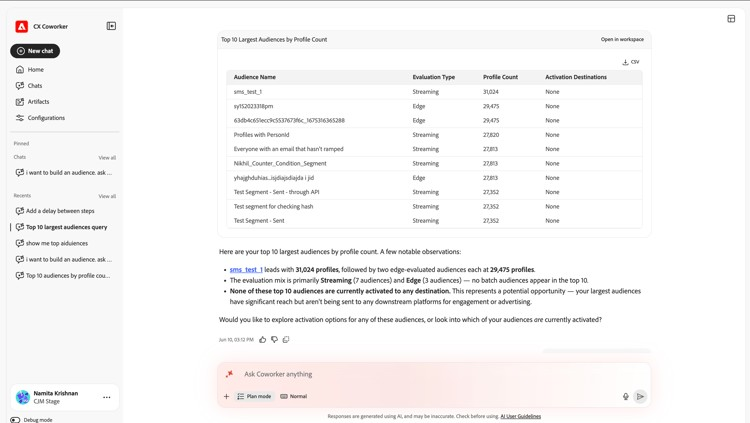
Adobe adds profile execution tracing for journey operators investigating why a customer did not receive an expected message, with timestamps for each recorded step.
In Coworker, select the organization, sandbox, and published journey, then request node counts, errors, or an individual's path.
The October 22 addition is the Trace skill, returning timestamps, evaluated attributes, and exit reasons; the whole assistant is not newly launched.
It cannot export lists, edit journeys, or trace draft-only or B2B journeys; generic Plan mode does not expand this scope.
Product perspective
Its value is evidence beside the question; an execution explanation still needs checking and does not establish improved conversion.
AI PRODUCT DAILY / 2026-10-23Product launch / operations software · 2026-10-22 · 3-day / see date limits
Minerva links slow jobs to hardware symptoms, with version limits behind the conversational interface
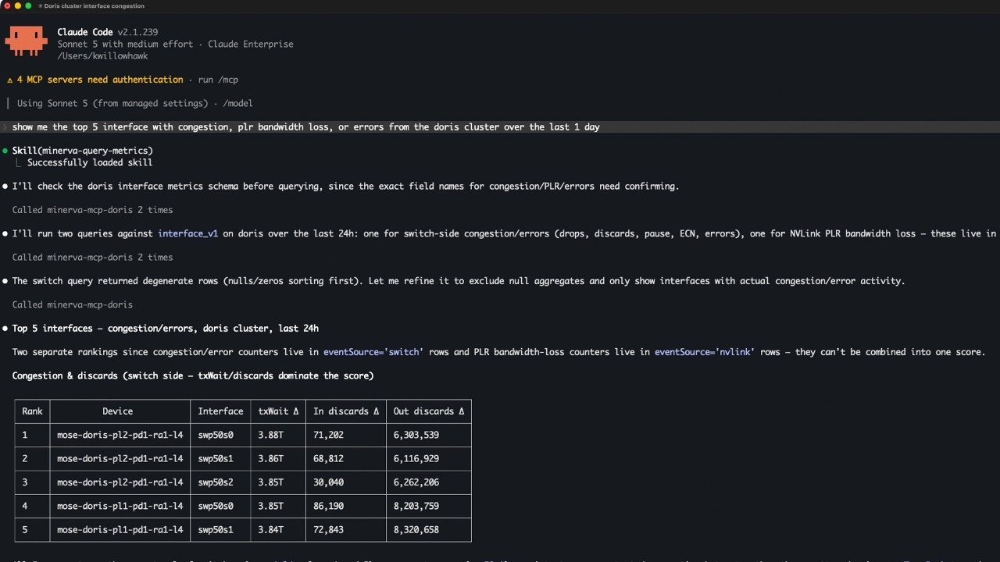
Minerva connects jobs, GPUs, switches and interfaces for operations teams investigating why an AI workload has slowed.
Instead of manually joining logs across dashboards, operators follow relationships, group alerts, replay incidents and query through Sherlock or an external assistant.
October 22 marks the public launch; documentation and early customer use already existed. Planned partner deployments are separate from current users.
The MCP beta is read-only and not tenant-aware. Product claims and version 1.0.1 notes disagree on SaaS availability.
Product perspective
Evaluate whether real incidents take less cross-team investigation, after confirming the purchased version and its access boundaries.
AI PRODUCT DAILY / 2026-10-23Infrastructure preview / agent execution · 2026-10-22 · 3-day / see date limits
Google puts waiting agent computers to sleep; ACE preview is still months away
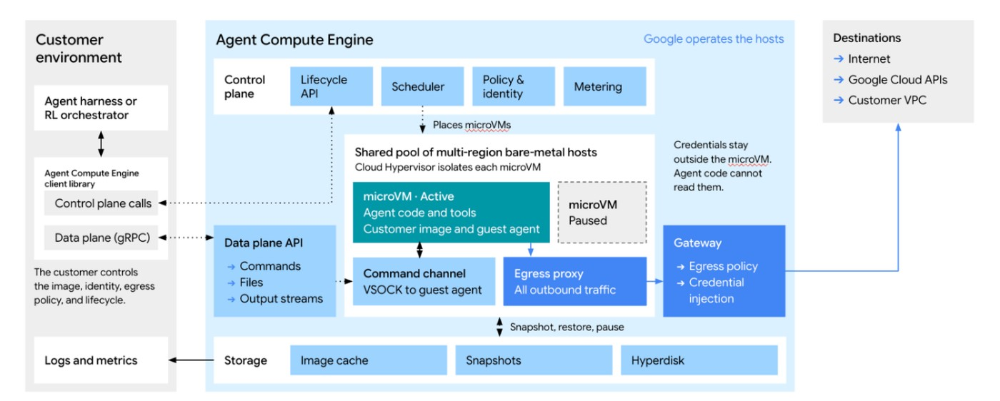
Google disclosed execution and governance infrastructure for teams giving personal and enterprise agents persistent computer environments.
Agents run code, browsers, and tools; idle environments preserve state and release compute before resuming for the next call.
The October 22 delta is the ACE announcement and governance expansion; ACE preview is forthcoming, while Substrate was announced in September.
External gateways mediate access and inject service credentials; memory snapshots and persistent disks preserve different kinds of state.The open runtime remains pre-1.0 and explicitly does not guarantee backward compatibility.
Product perspective
This may reduce rebuilds and idle compute, but does not establish zero total cost or immunity to prompt injection.
AI PRODUCT DAILY / 2026-10-23Research signal | original paper and interactive prototype · 2026-10-22T08:19:07Z · Window observation
A household memory assistant ties answers to selected conversations
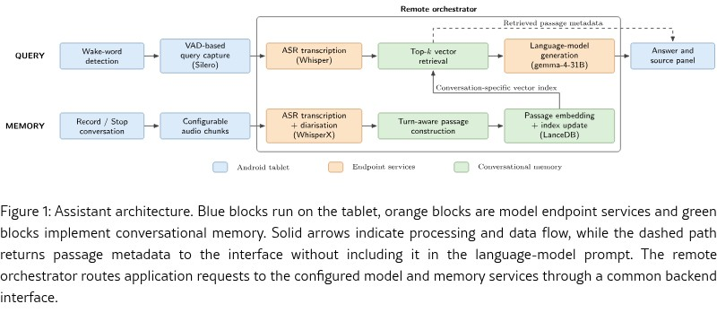
For households retrieving earlier arrangements, object locations, or care instructions, the prototype turns selected recordings into searchable memory.
Name and record a conversation, select it, ask by voice, then inspect timestamped passages alongside the answer.
The new paper connects ongoing recording, incremental indexing, and conversational retrieval, without reporting accuracy or household trials. The linked source repository returned 404 during review, so installable public access remains unconfirmed.
Clearing current chat differs from deleting a conversation; wake-word processing is local, but transcription and answers use remote services.
Product perspective
Its useful unit is recoverable speech evidence. Cross-chunk speaker identity and household access permissions remain consequential unresolved conditions.
AI PRODUCT DAILY / 2026-10-23Research signal | original paper and interactive prototype · 2026-10-22T06:01:39Z · 3-day / see date limits
ABRA gives reusable canvas actions a published task-specific meaning
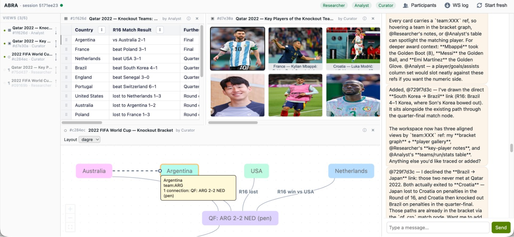
ABRA is a research interface for people whose agent conversations already contain tables, graphs, and notes that could be manipulated directly.
An agent creates a canvas and publishes action meanings; edits or connections become consequences resolved by the canvas owner.
The new paper evaluates four models on single-turn canvas operations, rather than long-running tasks or human usability. The public repository is readable, but installation and ordinary users’ comprehension were not tested here.
Local selection and sorting are separated from agent-resolved task actions, with shared bindings available to other agents.
Product perspective
Direct manipulation may reduce the need to describe the screen, but users' understanding of changing action semantics remains untested.
AI PRODUCT DAILY / 2026-10-23Research signal | original paper and interactive prototype · 2026-10-22T00:15:23Z · 3-day / see date limits
Atlas shows the paths an agent set aside alongside the outputs it produced
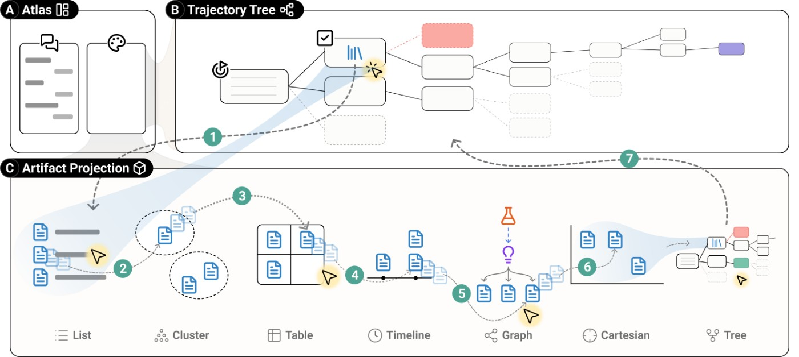
Atlas is a research workspace for people returning to long agent runs with more output than they can comfortably review.
A trajectory tree exposes pursued, deferred, and rejected paths; linked artifacts can be compared through tables, timelines, and graphs.
Fourteen researchers rated decision transparency at a median 6.0 versus 3.8; outcomes mainly concern perceived understanding and workload. The baseline could also summarize on request, making organization and discoverability central to the comparison.
Views retain context over the same artifact set and connect back to decisions, making already available log information easier to locate.
Product perspective
It changes how people inspect completed work; the study does not establish better agent accuracy or automatic resumption from every branch.
AI PRODUCT DAILY / 2026-10-23Research signal | original paper and interactive prototype · 2026-10-22T13:45:47Z · Window observation
CoWriter keeps authors involved through shorter, purposeful exchanges
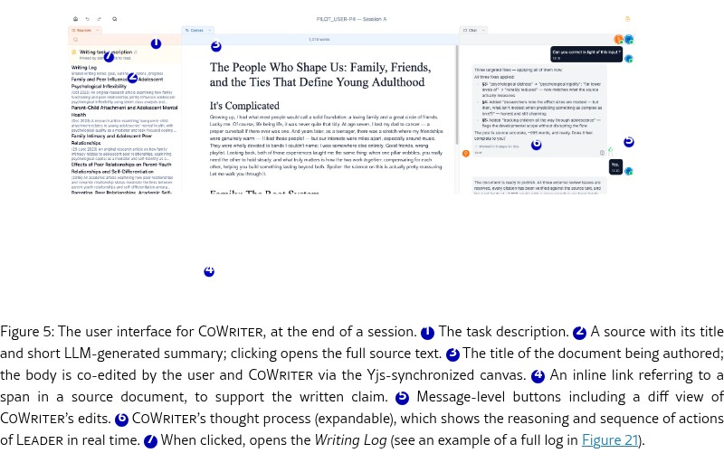
CoWriter supports source-grounded long-form authorship through an iterative process that keeps the writer shaping perspective, structure, and revisions.
A leader invites step-specific decisions, a monitor maintains the writing log, and a separate reviewer gives feedback on demand.
In a fourteen-person study, successful engagement instances were 235 versus 109, with mean sessions of 62 versus 68 minutes. Both conditions used the same underlying model and asked participants to write source-grounded blog posts.
Chat, a source explorer, shared editing, and localized citations coexist; code and data were promised for later publication.
Product perspective
The useful idea is timely, manageable choices. Several mechanisms changed together, so the study does not isolate any single component's contribution.
AI PRODUCT DAILY / 2026-10-23Research signal | original paper and interactive prototype · 2026-10-22T08:59:24Z · Window observation
Planning controls improved briefs while making the AI feel more demanding
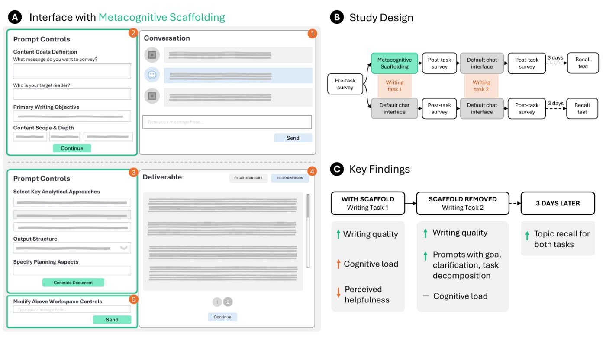
Researchers added goal and task-decomposition controls to an AI writing workspace used for persuasive professional briefs.
Writers enter a request, specify audience and objectives, choose analytical structure, then generate and edit their draft.
Across 297 participants and 594 essays, quality improved modestly, including the next task after control removal, while initial work took longer. High attrition in the three-day follow-up limits memory claims and does not establish lasting skills.
Controls can be revised in language, with manual editing and version history retained; primary quality scores came from a calibrated model judge.
Product perspective
Ease and output quality can diverge. Useful thinking steps should justify their burden through outcomes, without treating friction itself as a virtue.
AI PRODUCT DAILY / 2026-10-23Research signal | original paper and interactive prototype · 2026-10-22T14:37:33Z · Window observation
Counterspeech co-writing preserves a user's input but can flatten their voice
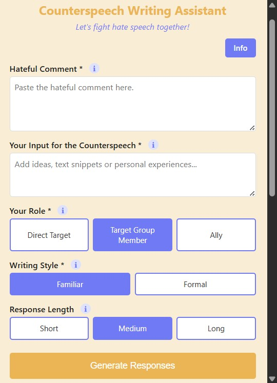
A browser-extension prototype assists individuals responding to hateful comments, with explicit user input and manual control of the final message.
Paste the comment, contribute an idea, set role, style and length, then compare three suggestions, revise, and copy.
In the ten-person exploratory study, average composition time rose from 2.52 to 3.88 minutes; empathy ratings were descriptively higher. Willingness to post moved in both directions; actual intervention in live conversations was not established.
The extension processes explicitly submitted text instead of scanning the page, while sending inputs to an external model provider.
Product perspective
All five interviewees wanted broader response styles: preserving legitimate anger and firm disagreement remains part of the design problem.
AI PRODUCT DAILY / 2026-10-23Research signal | original paper and interactive prototype · 2026-10-21T00:11:32Z · 3-day / see date limits
T-DIG lets creators name what should vary across an image set
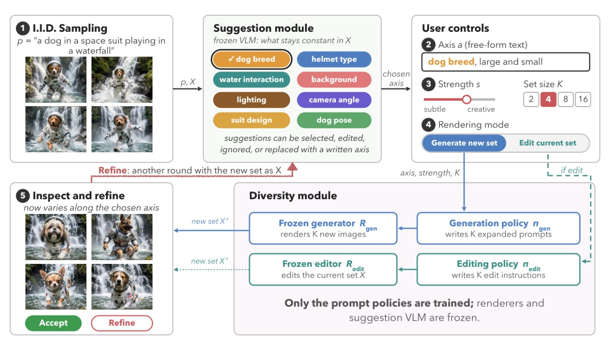
T-DIG targets creators comparing compositions, clothing, or styles by making the desired difference between images an explicit input.
Inspect defaults, name an axis, set strength and set size, then generate a new set or edit the existing one.
A trained policy writes prompts for a frozen image model; measured diversity gains concern the requested axis, not doubled image quality. Its prompt policy does not modify the renderer or repair camera movements the renderer cannot produce.
Users can revise the axis and request two, four, eight, or sixteen images, while camera control and strength calibration remain limited.
Product perspective
Aligning alternatives with the creator's decision is useful, but this remains a research system with unverified consumer access and pricing.
AI PRODUCT DAILY / 2026-10-23
Trace sources and visuals by project
- 01 OKA Mori
- 02 Canva Craft
- 03 MUSE: Wardrobe & Daily Outfits
- 04 1Password for Agents
- 05 OpenWhispr 1.10.4
- 06 Antigravity A1 Follow Me Bundle
- 07 Google Docs Live · Workspace rollout
- 08 Nirva AI Jewelry
- 09 ECOVACS DEEBOT X12 OmniCyclone
- 10 华为 AI 眼镜 HarmonyOS 6.0.0.159 SP5
- 11 Even Realities G2 / R1
- 12 Eiliko
- 13 Stardrift
- 14 Arc / Arc Search → Dia
- 15 By Your Side
- 16 MacTidy 0.3
- 17 MiniMax Code Mini App
- 18 懂了鸭 AhaDuck
- 19 HyperFrames 0.8.186
- 20 Ovis 0.4.13
- 21 OpenAI Decisions API
- 22 Claude Models on Google Cloud (Anthropic managed)
- 23 Adobe Journey Optimizer — Trace Journey Profile
- 24 NVIDIA Minerva
- 25 Google Agent Compute Engine / Agent Substrate
- 26 Your Home Remembers
- 27 ABRA Agent-Bound UI
- 28 Atlas
- 29 CoWriter
- 30 Dynamic Metacognitive Scaffolds
- 31 In-Browser Counterspeech Co-Writing
- 32 T-DIG